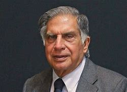
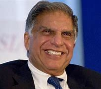
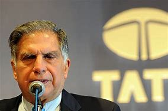

|  |
Ratan Tata was born in Bombay (now Mumbai), during the British Raj, into a Parsi Zoroastrian family, on 28 December 1937.[12] He was the son of Naval Tata (who was born in Surat and later adopted into the Tata family), and Soonoo Tata (the niece of Tata group founder Jamsetji Tata). Tata's biological grandfather, Hormusji Tata was a member of the Tata family by blood. In 1948, when Tata was 10, his parents separated, and he was subsequently raised and adopted by Navajbai Tata, his grandmother and widow of Ratanji Tata.[13] He had a younger brother Jimmy Tata[14] and a half-brother, Noel Tata, from Naval Tata's second marriage to his stepmother Simone Tata. |
Tata studied at the Campion School, Mumbai until 8th grade. He then continued his studies at the Cathedral and John Connon School in Mumbai, the Bishop Cotton School in Shimla, and the Riverdale Country School in New York City, from which he graduated in 1955.[15][16][17] After high school, Tata enrolled in Cornell University, from which he graduated with a bachelor's degree in architecture in 1962.[18][19] While at Cornell, Tata became a member of the Alpha Sigma Phi Fraternity. In 1975, Tata enrolled in the Advanced Management Program at Harvard Business School (HBS).[20] In 2008, Tata gifted Cornell $50 million, becoming the largest international donor in the university's history.[21][22] Tata also donated $50 million to Harvard Business School, Harvard University to establish an executive center, which is now called Tata Hall that supports over 9,000 executive education students each year.[23][24] |  |
|  |
Tata had also invested in multiple companies with his own wealth. He had invested in Snapdeal – one of India's leading e-commerce websites. In January 2016, he invested in Teabox, an online premium Indian Tea seller,[41] and CashKaro.com, a discount coupons and cash-back website.[42] He had made small investments in both early and late stage companies in India, such as INR 0.95 Cr in Ola Cabs.[43] In April 2015, it was reported that Tata had acquired a stake in Chinese smartphone startup Xiaomi.[44] In 2016, he invested in Nestaway an online real-estate portal that later acquired Zenify to start the online real-estate and pet-care portal, Dogspot.[45][46][47][48] Tata also launched a companionship startup for senior citizens named Goodfellows, to encourage intergenerational friendships.[49] |